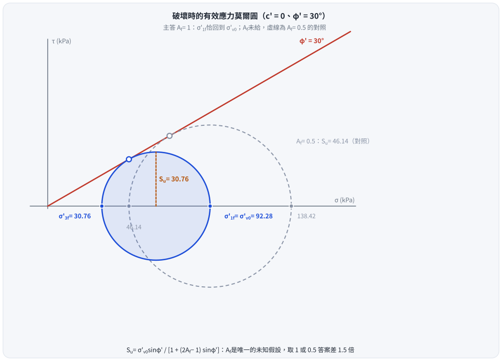

📄 題目正本：考卷原文・附圖・判讀清單（已確認）
SM-2003-4 題目正本
本檔只記錄考卷上寫了什麼、圖上畫了什麼，不含任何解法。解析見同資料夾
SM-2003-4.md。
判讀清單已確認（凍結）；本檔原則上不再修改（改動須回考卷原圖並記 log）。
| 項目 | 內容 |
|---|---|
| 考卷 | raw/exams/SM-2003_土壤力學與基礎設計.pdf 第 1 頁（全一頁），第四題 |
| 考年 | 民國 92 年（2003） |
| 配分 | 25 分 |
| 附圖 | 無 |
| 判讀狀態 | 已確認（2026-11-15 關卡一：使用者授權依建議判讀確認；轉錄 2026-11-15；PyMuPDF 110 dpi 全頁目視，PDF 文字層核對；盲讀後才比對既有解析） |
1. 考卷原文（逐字）
四、有一正常壓密黏土其有效摩擦角為 30°，如自該黏土之現地地層深度 12 m 處取不擾動土樣，假設未受解壓影響，其不排水（UU 三軸試驗）剪力強度為何？（黏土飽和單位重 $\gamma_{sat}$ = 17.5 kN/m³，地下水位於地表）（25 分）
2. 考卷給的公式、附表與參數
- 正常壓密黏土，有效摩擦角 30°。
- 取樣深度 12 m；$\gamma_{sat}$ = 17.5 kN/m³；地下水位於地表。
- 條件：假設未受解壓影響。
- 沒有給：$c'$（正常壓密）、$K_0$、孔隙水壓參數 $A_f$、$\gamma_w$、塑性指數、UU 試驗圍壓。
- 卷首注意事項：㈠不必抄題，作答時請將試題題號及答案依照順序寫在試卷上，於本試題上作答者，不予計分。㈡可以使用電子計算器，但需詳列解答過程。
3. 附圖
無。
4. 判讀清單
| # | 項目 | 判讀 | 圖上／題文依據 | 把握 |
|---|---|---|---|---|
| 1 | 「未受解壓影響」的意義與試體有效應力 | 試體保有取樣前的現地有效應力；作答須假設此有效應力狀態——取現地垂直有效覆土壓 $\sigma'_v$（等向）或 $K_0$ 異向狀態，並須假設 $A_f$（或等效關係）才能由 $\phi'$ 求 $S_u$。考卷兩者都沒給 | 題文 | 不確定（影響答案）；使用者授權依建議確認：完美取樣（$A_s$ = 1，試體保有等向 $\sigma'_{v0}$）且破壞時 $A_f$ = 1 → $\sigma'_{1f}=\sigma'_{v0}$（舊解同）。⚠ 待使用者複核：考卷沒給 $A_f$，改取 $A_f$ = 0.5 時 $S_u$ 由 30.76 變 46.14 kPa |
| 2 | $c'$ | 正常壓密 → $c'$ = 0 | 題文「正常壓密」 | 確定（解讀） |
| 3 | 現地條件 | 深 12 m、水位在地表、全層 $\gamma_{sat}$ = 17.5 | 題文 | 確定 |
| 4 | 所求 | UU 三軸試驗的不排水剪力強度 $S_u$ | 題文 | 確定 |
| 5 | 考卷沒有給 | $K_0$、$A_f$、$\gamma_w$、PI、UU 圍壓 | 全題 | 確定 |
轉錄：2026-11-15（SM-U1-5 題目正本推廣・批 1）
確認：2026-11-15 使用者授權依建議判讀確認（SM-U1-5 題目正本推廣・批 1，關卡一；使用者指示「要我確認的請依你建議」）
考題編號：SM-2003-4
主分類： SM-U1-5 土壤強度特性與變形性
副分類： 無
分析法： 有效應力法
標籤： 正常壓密 不排水剪力強度 UU試驗 Mohr-Coulomb破壞準則 孔隙水壓參數 有效應力原理
1. 題目（考卷原文見題目正本）
考卷原文、公式／附表、附圖與判讀清單（已確認）見
SM-2003-4-problem.md。本節只列解題時最容易讀錯的地方與本解使用的記號；題意以題目正本為準。
常見誤讀
| 項目 | 正確判讀 | 常見誤讀 |
|---|---|---|
| 「未受解壓影響」 | 完美取樣：試體保有現地有效應力 $\sigma'_{v0}$；破壞時 $A_f$ = 1 → $\sigma'_{1f}=\sigma'_{v0}$（題目正本 #1，已確認；考卷未給 $A_f$） | 以為 UU 強度可由 $\phi'$ 直接寫成 $\sigma'_{v0}\tan\phi'$ |
| $c'$ | 正常壓密 → $c'$ = 0（#2） | 另行假設凝聚力 |
| 水位 | 水位在地表，有效覆土壓用 $\gamma_{sat}-\gamma_w$（#3） | 用總應力 $17.5\times12$ |
本解記號： $\sigma'_{v0}$ 現地有效覆土壓；$\sigma'_{1f}$、$\sigma'_{3f}$ 破壞時主有效應力；$A_f$ 破壞時孔隙水壓參數；$S_u$ 不排水剪力強度。
2. 考題核心精神與出題者意圖 (Core Concepts & Examiner's Intent)
本題旨在測驗考生對於正常壓密黏土（Normally Consolidated Clay）之不排水剪力強度（$S_u$）與有效應力參數之間關係的深刻理解。
出題者的核心意圖包括：
- 建立現地有效應力狀態：能準確計算給定深度之現地有效覆土壓力 $\sigma_{v0}'$。
- 完美取樣與未受解壓影響的含義：題幹中的「未受解壓影響」等同於理論上的「完美取樣」狀態，加上未給定 Skempton 破壞時孔隙水壓參數 $A_f$，測驗考生是否知道針對正常壓密黏土之合理前置假設為破壞時的 $A_f \approx 1$（或等效認為破壞時的最大主有效應力 $\sigma_{1f}'$ 恰等於現地最大主有效應力 $\sigma_{v0}'$）。
- 有效應力破壞準則的應用：在 UU 試驗中，總應力呈現 $\phi_u = 0$ 行為，但其有效應力莫爾圓在破壞時必定會相切於由 $\phi'$ 定義之破壞包絡線。
3. 解題戰略地圖與陷阱分析 (Strategic Roadmap & Trap Analysis)
- 計算現地應力狀態：
- 地下水位位於地表，全深度範圍土壤飽和。
- 計算深度 $12 \text{ m}$ 處之總應力 $\sigma_{v0}$、孔隙水壓 $u_0$ 及有效應力 $\sigma_{v0}'$。
- 推求不排水剪力強度 $S_u$：
- 針對正常壓密黏土，在未給定 $A_f$ 之情況下，採用最合理之理論邊界條件：假設 $A_f = 1$。
- 根據此條件，試樣於 UU 試驗破壞時的最大主有效應力會等同於現地有效覆土壓力，即 $\sigma_{1f}' = \sigma_{v0}'$。
- 依據 Mohr-Coulomb 有效應力破壞準則，利用 $\sigma_{1f}'$ 與 $\phi'$ 推算 $\sigma_{3f}'$。
- 不排水剪力強度 $S_u$ 即為破壞時莫爾圓之半徑：$S_u = (\sigma_{1f}' - \sigma_{3f}') / 2$。
- (捷徑) 可直接代入推導結果：$S_u = \sigma_{v0}' \frac{\sin \phi'}{1 + \sin \phi'}$。
3.5 變數層次分析 (Variable Hierarchy Analysis)
最終目標
求出該正常壓密黏土於 UU 試驗中之不排水剪力強度 $S_u$。
本題關鍵公式（依計算順序）
現地有效覆土壓力：
$$ \sigma_{v0}' = \Sigma \gamma_{sat} z - \gamma_w z $$
破壞時主有效應力與強度關係（假設 $A_f=1 \Rightarrow \sigma_{1f}' = \boxed{\sigma_{v0}'}$）：
$$ S_u = \frac{\boxed{\sigma_{1f}'} - \sigma_{3f}'}{2} \quad \text{其中} \quad \sigma_{3f}' = \boxed{\sigma_{1f}'} \tan^2\left(45^\circ - \frac{\phi'}{2}\right) $$
(或直接使用導出公式)：
$$ S_u = \boxed{\sigma_{v0}'} \frac{\sin \phi'}{1 + \sin \phi'} $$
L1：題目直接給定
| 符號 | 數值 | 說明 |
|---|---|---|
| $\gamma_{sat}$ | $17.5 \text{ kN/m}^3$ | 黏土飽和單位重 |
| $\phi'$ | $30^\circ$ | 黏土有效摩擦角 |
| $z$ | $12 \text{ m}$ | 取樣深度 |
| $z_w$ | $12 \text{ m}$ | 地下水頭高度（地下水位於地表） |
L2：需知識點推導
現地應力狀態
| 符號 | 公式／來源 | 卡關? |
|---|---|---|
| $\sigma_{v0}$ | $\gamma_{sat} \times z$ | |
| $u_0$ | $\gamma_w \times z_w$ | |
| $\sigma_{v0}'$ | $\sigma_{v0} - u_0$ | |
剪力強度與試驗應力狀態
| 符號 | 公式／來源 | 卡關? |
|---|---|---|
| $\sigma_{1f}'$ | $\sigma_{1f}' \approx \sigma_{v0}'$ (基於 $A_f=1$ 之 NC 黏土假設) | |
| $\sigma_{3f}'$ | $\sigma_{1f}' \tan^2(45^\circ - \phi'/2)$ | |
| $S_u$ | $(\sigma_{1f}' - \sigma_{3f}') / 2$ | |
L3：深層知識（不懂就卡住）
| 知識點 | 說明 | 卡關? |
|---|---|---|
| $A_f=1$ 假設與完美取樣 | 「未受解壓影響」代表完美取樣，且對於 NC 黏土在未提供孔隙水壓參數的情況下，依 Skempton 理論假設破壞時 $A_f=1$，會得到 $\sigma_{1f}' \approx \sigma_{v0}'$，此為解題唯一突破口。 | |
| 有效應力破壞準則 | 即使 UU 試驗是總應力 $\phi_u=0$ 之行為，但其破壞瞬間的內部有效應力仍須滿足 $c'=0, \phi'$ 之 Mohr-Coulomb 包絡線。 |
4. 步驟化詳細計算過程 (Step-by-Step Detailed Calculation)
Step 1: 計算現地深度 12 m 處之有效應力
地下水位於地表，土壤整層飽和。（水的單位重取 $\gamma_w = 9.81 \text{ kN/m}^3$）
總垂直應力：
$$ \sigma_{v0} = 17.5 \times 12 = 210 \text{ kPa} $$
孔隙水壓力：
$$ u_0 = 9.81 \times 12 = 117.72 \text{ kPa} $$
有效垂直應力：
$$ \sigma_{v0}' = 210 - 117.72 = 92.28 \text{ kPa} $$
Step 2: 推算不排水剪力強度 $S_u$
對於正常壓密黏土（$c'=0$），題意指明「未受解壓影響」，此情境對應理論上的完美無擾動取樣。在未給定 Skempton 孔隙水壓參數時，合理假設破壞時孔隙水壓參數 $A_f = 1$（此為 NC 黏土之典型值）。
在此假設下，UU 試驗破壞時之最大主有效應力 $\sigma_{1f}'$ 將等於現地有效覆土壓力 $\sigma_{v0}'$。
$$ \sigma_{1f}' = \sigma_{v0}' = 92.28 \text{ kPa} $$
依據 Mohr-Coulomb 有效應力破壞準則，破壞時主應力關係為：
$$ \sigma_{1f}' = \sigma_{3f}' \tan^2\left(45^\circ + \frac{\phi'}{2}\right) = \sigma_{3f}' \frac{1+\sin\phi'}{1-\sin\phi'} $$
代入 $\phi' = 30^\circ$，計算主動土壓力係數倒數（或稱被動土壓力係數 $K_p$）：
$$ \tan^2\left(45^\circ + \frac{30^\circ}{2}\right) = \tan^2(60^\circ) = 3 $$
求破壞時之有效圍壓 $\sigma_{3f}'$：
$$ \sigma_{3f}' = \frac{\sigma_{1f}'}{3} = \frac{92.28}{3} = 30.76 \text{ kPa} $$
不排水剪力強度 $S_u$ 即為破壞時有效應力莫爾圓之半徑：
$$ S_u = \frac{\sigma_{1f}' - \sigma_{3f}'}{2} = \frac{92.28 - 30.76}{2} = 30.76 \text{ kPa} $$
策略註解：亦可直接代入推導結果 $S_u = \sigma_{v0}' \frac{\sin \phi'}{1 + \sin \phi'} = 92.28 \times \frac{\sin 30^\circ}{1 + \sin 30^\circ} = 92.28 \times \frac{0.5}{1.5} = 30.76 \text{ kPa}$，結果完全一致。
答：其不排水（UU 三軸試驗）剪力強度為 $\boxed{30.76 \text{ kPa}}$

圖 1 $A_f$ = 1 時 $\sigma'_{1f}$ 恰回到 $\sigma'_{v0}$；考卷沒給 $A_f$，改取 0.5 圓就變大 1.5 倍。攔下「以為 $S_u$ 只由 $\sigma'_{v0}$ 與 $\phi'$ 決定、忘了交代 $A_f$ 假設」的錯誤。
5. 關鍵爭議點與進階探討 (Critical Issues & Advanced Discussion)
-
「未受解壓影響」與 $A_f = 1$ 的隱含假設：
在國內的土壤力學考題中，若題幹強調「未受解壓影響」或「完美取樣」，且未給出破壞時的 Skempton $A_f$ 參數，最正統的破題方式便是假定正常壓密黏土的 $A_f = 1$。如此一來，試體從現地取樣到 UU 試驗破壞的有效應力路徑，其最大主有效應力恰好會回到 $\sigma_{1f}' = \sigma_{v0}'$。此為多數教科書（如 Das 或施國欽老師的教材）推導 $S_u / \sigma_{v0}'$ 理論公式的核心前置假設，考生必須能熟練引用。 -
與總應力凝聚力 $c_u$ 的對應：
UU 試驗在飽和黏土下表現出 $\phi_u = 0$ 的總應力破壞包絡線，此時測得的剪力強度即為不排水凝聚力 $c_u$ （亦即 $S_u$）。本題透過有效應力莫爾圓相切於有效破壞包絡線（$c'=0, \phi'=30^\circ$）來反求此半徑，是連接「有效應力參數」與「不排水抗剪強度」的典型題型。 -
$A_f$ 未給的替代解讀（⚠ 待使用者複核）：考卷只寫「未受解壓影響」、沒有給 $A_f$。本解依題目正本 #1 定案取完美取樣 $A_s = A_f = 1$，$S_u = \sigma'_{v0}\sin\phi'/[1+(2A_f-1)\sin\phi']$ 對 $A_f$ 很敏感：$A_f = 1$ → 30.76 kPa（主答）；$A_f = 0.5$ → 46.14 kPa；$A_f = 0$（不產生超額孔隙水壓，$\sigma'_{3f} = \sigma'_{v0}$）→ 92.28 kPa；經驗式 Mesri $S_u \approx 0.22\sigma'_{v0}$ → 20.3 kPa。考場作答宜寫明 $A_f = 1$ 的假設。（2026-11-15 盲解比對補註）
修正日期：2026-11-15（§1 改為指向題目正本 SM-2003-4-problem.md；§5 補題目資訊不足的替代解讀；§4 Step 2 補解題圖解 figs/SM-2003-4-fig-1-mohr-af.svg；非勘誤）